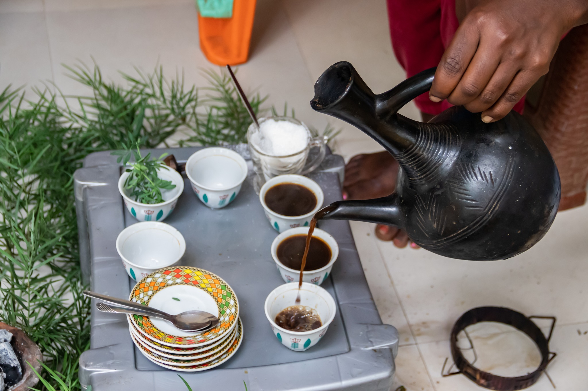

Café Béréka es una microtostadora de café que se especializa en ofrecer los mejores granos de México, tostados bajo pedido para garantizar la mayor frescura posible. Nos comprometemos a brindar a nuestros clientes una experiencia única y deliciosa en cada taza de café.
¿Qué es Bereka?

Bereka es una palabra etíope que significa "bendición". En el contexto de la ceremonia del café etíope, Bereka representa la tercera y última ronda de café, simbolizando bendiciones y buenos deseos. La ceremonia, profundamente arraigada en la cultura etíope, se compone de tres rondas: Abol, Tona y Bereka. Cada una tiene un significado progresivo, y Bereka es la más suave, pero con un fuerte sentido espiritual. Marca el cierre del encuentro, ofreciendo un sentimiento de paz y armonía colectiva, ya que los participantes comparten la bendición que representa este último sorbo.
En el contexto de la ceremonia del café etíope, Bereka representa la tercera y última ronda de café, simbolizando bendiciones y buenos deseos. La ceremonia, profundamente arraigada en la cultura etíope, se compone de tres rondas: Abol, Tona y Bereka. Cada una tiene un significado progresivo, y Bereka es la más suave, pero con un fuerte sentido espiritual. Marca el cierre del encuentro, ofreciendo un sentimiento de paz y armonía colectiva, ya que los participantes comparten la bendición que representa este último sorbo.
Puedes comprar nuestros cafés en nuestra tienda en línea, donde ofrecemos una variedad de productos de café. También puedes visitar nuestra sección de contacto para obtener más información sobre cómo realizar un pedido.
En nuestro blog, ofrecemos descripciones detalladas de cada variedad de café que vendemos. La mayoría de nuestros cafés son distintas variedades de café Arábica.
El empaque ecológico es una opción más sostenible y biodegradable, mientras que el empaque sellable con válvula es ideal para mantener la frescura del café durante más tiempo. Puedes conocer más acerca de cómo amacenar el café en nuestro blog.
Procesamos los pedidos en hasta 48 horas hábiles y lo envíamos por distintos métodos de paquetería. En CDMX sale en paquetería del mismo día.
Aceptamos pagos con tarjetas de crédito, débito, PayPal y transferencias bancarias. También puedes consultar nuestra tienda en línea para más opciones.
Tostamos el café bajo pedido y lo enviamos inmediatamente después de ser tostado. Esto asegura que recibas el café más fresco posible.
Actualmente no ofrecemos café descafeinado, pero estamos trabajando en ello. Te invitamos a estar atento a nuestras novedades.
Actualmente no ofrecemos tueste oscuro. Nuestros tuestes son medio o medio oscuro. Las razones son que los tuestes oscuros destruyen las cualidades del café. Al superar por mucho el segundo crack se destruyen los azúcares y se generan sabores amargos. También se liberan aceites que obtienen sabores rancios rápidamente y los cuales pueden influir en el sabor de otros granos al contaminar los equipos.